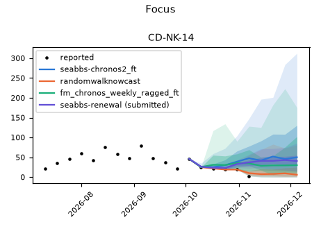
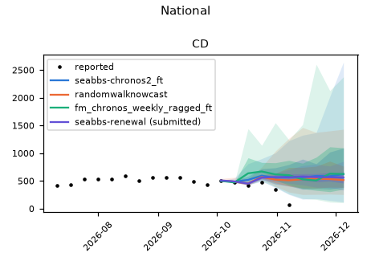
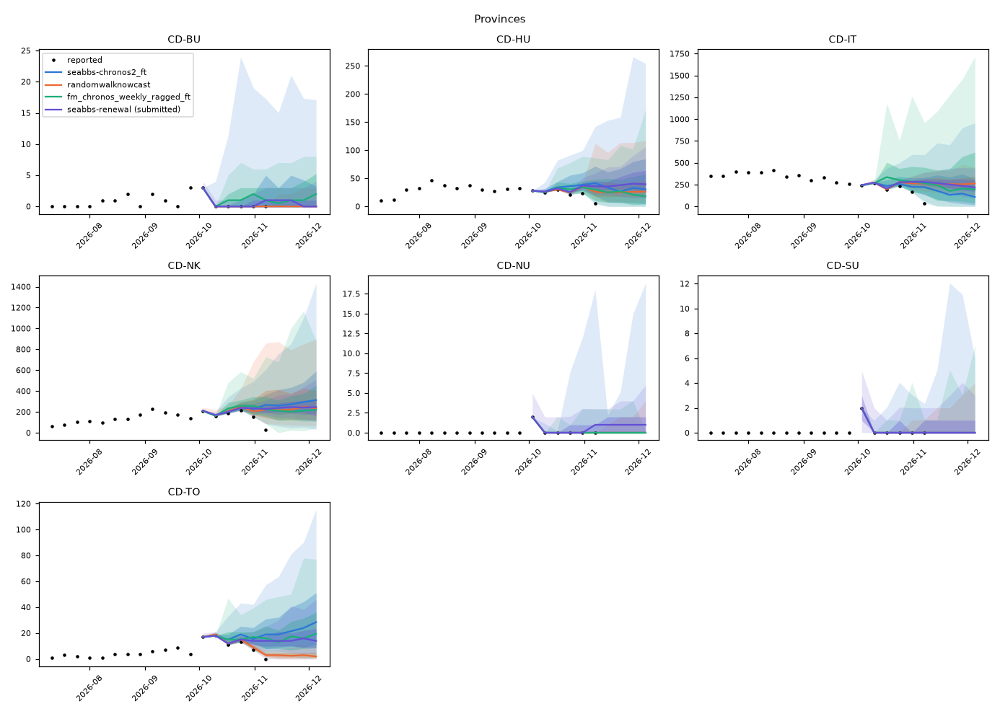
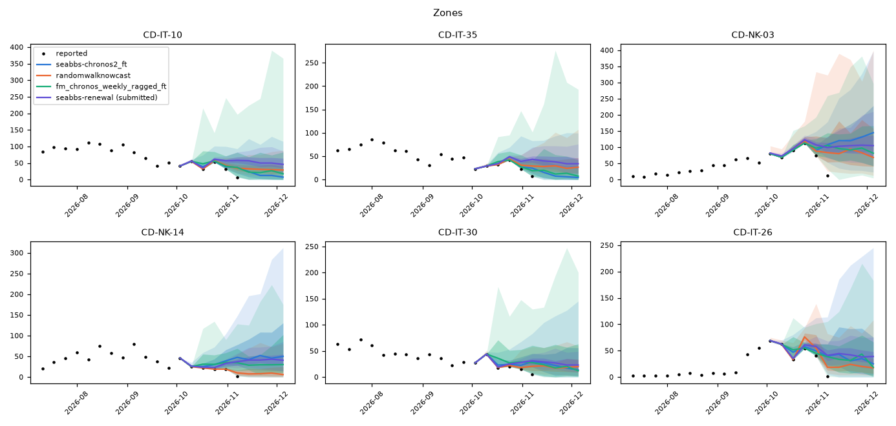

Submission review: seabbs-chronos2_ft¶
Dry run of the seabbs-chronos2_ft track for the round 2026-11-14, from data as of 2026-11-08. Nothing was pushed.
What would be submitted¶
- Model:
fm_chronos_daily_ragged_ft. - Outcome: round skipped. fine-tuned Chronos-2 on the daily releases could not run or was ruled out (fine-tuned Chronos-2 on the daily releases was ruled out (plausible: CD-NK-14 2026-11-28: 97.5% quantile 402 is over 15 times the recent maximum 22 (and 1 more))). This round is skipped for this model: no other model is submitted in its place.
- The track ran in 4.8 min on a GitHub runner's CPU.
- Checkpoint: release
chronos-ft-e8a1f5ae338b, adapter SHA-256315b2f7a96e6. - Held-out loss: 0.290 before fine-tuning, 0.177 after, on 2098 held-out blocks from 4000 outbreaks.
Checks and hub validation¶
Round skipped¶
fine-tuned Chronos-2 on the daily releases could not run or was ruled out (fine-tuned Chronos-2 on the daily releases was ruled out (plausible: CD-NK-14 2026-11-28: 97.5% quantile 402 is over 15 times the recent maximum 22 (and 1 more))). This round is skipped for this model: no other model is submitted in its place.
| step | candidate | convergence | predictive checks | forecast checks | hub validation | outcome |
|---|---|---|---|---|---|---|
chronos2_ft_daily |
fine-tuned Chronos-2 on the daily releases | N/A | N/A | FAIL | not run | FAIL |
Forecast checks for chronos2_ft_daily: FAIL¶
| check | status | result |
|---|---|---|
| schema | PASS | format matches the hub's round |
| values | PASS | all values finite and non-negative |
| samples | PASS | 100 full trajectories per location |
| coverage | PASS | 546 locations, weeks 2026-10-24 to 2026-12-05 |
| zones | PASS | 519 zones in 26 provinces |
| national_sum | PASS | CD is the exact sum (national.json: 26 modelled provinces) |
| bounds | WARN | CD-HU: 95th centile 266 is 5.66 times the bound base 47 (and 4 more) |
| plausible | FAIL | CD-NK-14 2026-11-28: 97.5% quantile 402 is over 15 times the recent maximum 22 (and 1 more) |
| growth | PASS | forecast growth within the cap |
| observed | PASS | close to observed (2026-11-08) |
| baseline | WARN | CD-HU-10: median 32.5 against random walk baseline 6 over 2026-11-21 to 2026-12-05 (ratio 3.41) (and 6 more) |
| previous | WARN | CD-IT-05: median 17 against last week's submission 65.5 over 2026-10-03 to 2026-11-28 (ratio 0.312) (and 1 more) |
Findings
**bounds** - WARN: CD-HU: 95th centile 266 is 5.66 times the bound base 47 - WARN: CD-HU-12: 95th centile 109 is 5.19 times the bound base 21 - WARN: CD-NK: 95th centile 1.43e+03 is 6.24 times the bound base 230 - WARN: CD-NK-21: 95th centile 105 is 5.24 times the bound base 20 - WARN: CD-TO: 95th centile 116 is 5.78 times the bound base 20 **plausible** - FAIL: CD-NK-14 2026-11-28: 97.5% quantile 402 is over 15 times the recent maximum 22 - FAIL: CD-NK-14 2026-12-05: 97.5% quantile 454 is over 15 times the recent maximum 22 **baseline** - WARN: CD-HU-10: median 32.5 against random walk baseline 6 over 2026-11-21 to 2026-12-05 (ratio 3.41) - WARN: CD-IT-07: median 2.5 against random walk baseline 24 over 2026-11-21 to 2026-12-05 (ratio 0.259) - WARN: CD-IT-28: median 0 against random walk baseline 16 over 2026-11-21 to 2026-12-05 (ratio 0.238) - WARN: CD-IT-29: median 3 against random walk baseline 26.5 over 2026-11-21 to 2026-12-05 (ratio 0.254) - WARN: CD-IT-35: median 18 against random walk baseline 74.5 over 2026-11-21 to 2026-12-05 (ratio 0.289) - WARN: CD-NK-20: median 14.5 against random walk baseline 1 over 2026-11-21 to 2026-12-05 (ratio 3.25) - WARN: CD-NK-26: median 28.5 against random walk baseline 3 over 2026-11-21 to 2026-12-05 (ratio 4.19) **previous** - WARN: CD-IT-05: median 17 against last week's submission 65.5 over 2026-10-03 to 2026-11-28 (ratio 0.312) - WARN: CD-IT-13: median 6 against last week's submission 27 over 2026-10-03 to 2026-11-28 (ratio 0.344)Posterior predictive checks for chronos2_ft_daily: N/A¶
chronos2_ft_daily: no posterior, so posterior predictive checks do not apply (the model has no sampler).
Fan charts¶
Medians with 50% and 90% intervals: seabbs-chronos2_ft, randomwalknowcast, fm_chronos_weekly_ragged_ft, seabbs-renewal (submitted). Dots are the counts reported as of 2026-11-08, over the last 16 weeks. Shown are the 7 provinces with a case in them, and the six zones with the most. The file has 26 provinces and 519 health zones.
Locations the gate flags¶
Median and 97.5% quantile (in brackets) of each model by week, with the counts reported so far. The gate's plausibility check fails a median under 1/20 of the largest of the last four reported weeks, or a 97.5% quantile over 15 times it.

CD-NK-14
| model | 2026-10-31 | 2026-11-07 | 2026-11-14 | 2026-11-21 | 2026-11-28 | 2026-12-05 |
|---|---|---|---|---|---|---|
| reported | 19 | 2 | ||||
| seabbs-chronos2_ft | 39 (128) | 48 (177) | 42 (251) | 52 (277) | 46 (402) | 50 (454) |
| randomwalknowcast | 19 (52) | 10 (70) | 8 (102) | 8 (119) | 10 (89) | 6 (150) |
| fm_chronos_weekly_ragged_ft | 36 (113) | 34 (159) | 28 (158) | 30 (221) | 30 (359) | 30 (182) |
| seabbs-renewal (submitted) | 33 (46) | 37 (61) | 41 (84) | 41 (80) | 43 (92) | 40 (99) |



Backtest against randomwalknowcast¶
Release backtest, rolling truth, checkpoint r1 2c2b22a03107 (evidence/fm-chronos)¶
| scale | target | weeks | model | n | rel_wis | rel_log_wis | coverage_50 | coverage_90 | bias |
|---|---|---|---|---|---|---|---|---|---|
| all | complete | nowcast | fm_chronos_daily_complete | 27 | 3.95 | 5.59 | 0.81 | 0.85 | 0.2 |
| all | complete | nowcast | fm_chronos_daily_ragged | 27 | 2.78 | 5.18 | 0.81 | 0.93 | 0.18 |
| all | complete | nowcast | fm_chronos_daily_ragged_ft | 27 | 3.66 | 5.6 | 0.81 | 0.89 | 0.19 |
| all | complete | nowcast | fm_chronos_weekly_complete | 27 | 3.28 | 3.92 | 0.85 | 0.96 | 0.15 |
| all | complete | nowcast | fm_chronos_weekly_ragged | 27 | 1.3 | 2.7 | 0.89 | 1.0 | 0.05 |
| all | complete | nowcast | fm_chronos_weekly_ragged_ft | 27 | 1.47 | 2.83 | 0.93 | 1.0 | 0.09 |
| all | complete | nowcast | randomwalk | 27 | 1.36 | 1.19 | 0.89 | 0.89 | -0.1 |
| all | complete | nowcast | randomwalknowcast | 27 | 1.0 | 1.0 | 0.89 | 0.93 | -0.05 |
| national | complete | nowcast | fm_chronos_daily_complete | 1 | 4.49 | 3.84 | 0.0 | 0.0 | 1.0 |
| national | complete | nowcast | fm_chronos_daily_ragged | 1 | 2.55 | 2.2 | 0.0 | 0.0 | 0.9 |
| national | complete | nowcast | fm_chronos_daily_ragged_ft | 1 | 3.96 | 3.41 | 0.0 | 0.0 | 1.0 |
| national | complete | nowcast | fm_chronos_weekly_complete | 1 | 3.07 | 2.63 | 0.0 | 1.0 | 0.8 |
| national | complete | nowcast | fm_chronos_weekly_ragged | 1 | 0.68 | 0.64 | 1.0 | 1.0 | -0.14 |
| national | complete | nowcast | fm_chronos_weekly_ragged_ft | 1 | 1.08 | 0.95 | 1.0 | 1.0 | 0.18 |
| national | complete | nowcast | randomwalk | 1 | 1.3 | 1.32 | 0.0 | 0.0 | -0.98 |
| national | complete | nowcast | randomwalknowcast | 1 | 1.0 | 1.0 | 0.0 | 0.0 | -1.0 |
Groupings (fm-agg)¶
Pending.
Rolling copula (fm-copula)¶
Pending.